Figure 16: GDP per capita map projected as equal area World Eckert VI, EPSG:54010
In module 01 we learned how to build a spatial database and create a simple map in QGIS. In this module, we explore a common analysis technique using quantitative, numerical data: the choropleth map.
Throughout this module, we'll be:
Our goal here is to make a world map of current countries and color them according to a particular quantitative data attribute (in the example below, the population density and internet usage for each country). We first need to obtain some geometries of world countries with which to make our map.
While there are many sources for these across the web, a good option is always Natural Earth. Natural Earth offers a variety of generalized layer with attributes for free download and use, which describe both cultural and physical data at one of three scales.
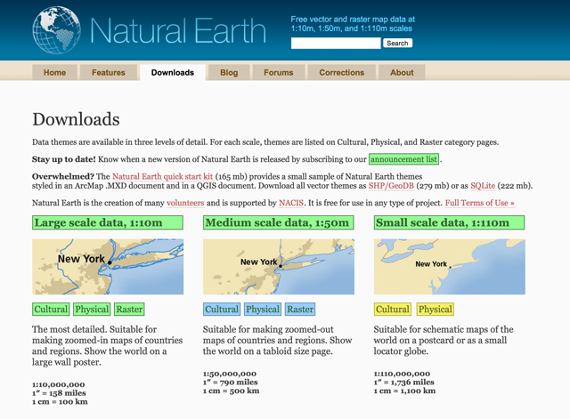
Figure 01: Natural Earth downloads options
For our purposes here we want to choose "Cultural" data from the "Medium scale data," which has been optimized for 1:50,000,000 scale maps. As we saw in the previous lesson, Kentucky at 1:1,000,000 scale fits comfortably on a map page that's 30" wide and 15" tall. How large of a page would the whole world fit at 1:50 million-scale?
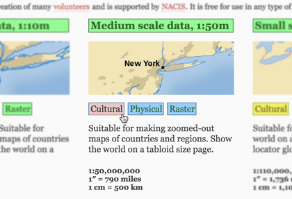
Figure 02: Selecting Cultural Medium scale data
On the 50 meter Cultural Vectors download page we are provided a variety of download options, including national administration boundaries, country-level states and provinces, point-level airports and ports, and polygons of urban areas. If you're curious, Natural Earth has built a database of the vector layers and is offered as an SQLite database. The raster data on Natural Earth, while not included in this database, is stunning and should be a primary resource for any continental-scale cartography and it's all free!
For this module, we're going to select "Download countries without boundary lakes" from the "Admin 0 - Countries" option. This option should prompt your web browser to download the shapefiles, bundled together in a zipped file named ne_50m_admin_0_countries_lakes.zip.
To make our map look a little more conventional, navigate to the "Physical" features and download the "Ocean" and "Graticule" at 10-degree interval. These layers will help us visualize map distortion later in the lesson while providing more detail for our map.
If you are working in a spatial database, let's create it now and add the downloaded data. Create a new QGIS project space, i.e., a module-02 folder and a new .qgs document. In QGIS's Browser Panel right-click on the SpatiaLite > Create database..., navigate to your project space, and save your database with an appropriate name:
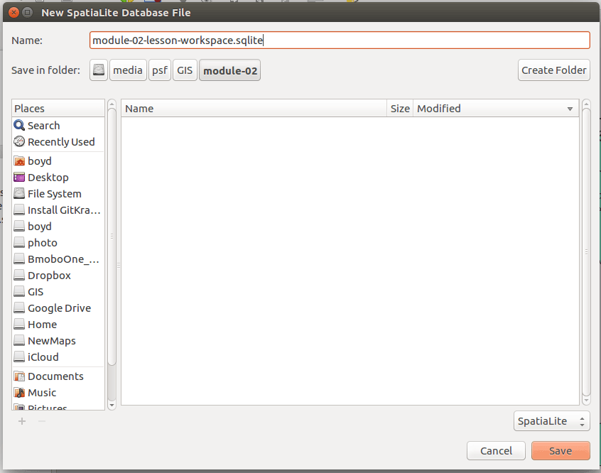 Figure 03: Add spatial database to project
In PostGIS you can create new schema with DB Manager. A schema can be thought of as a separate workspace or folder within your database where spatial assets are stored. While you can use your public schema for your projects, a separate schema is good to organize your data:
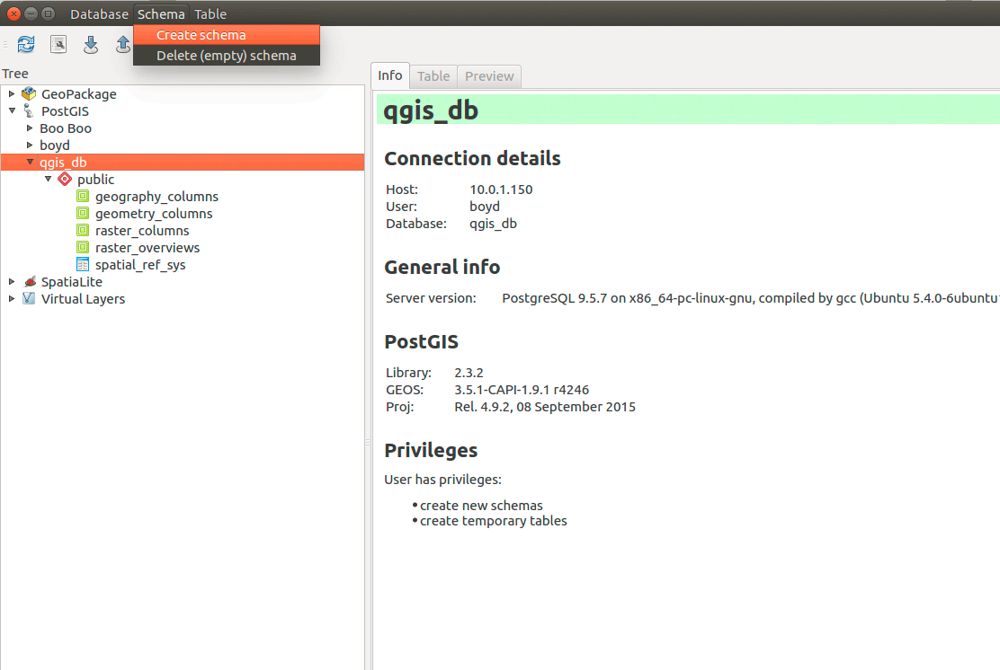 Figure 04: Create new schema in DB Manager
If your new schema is named "module_02", then the syntax for calling a table outside the public schema is to prefix the table name with the schema name separated by a period:
select
*
from
module_02.table_name
Using DB Manager, add the Natural Earth layers to your newly created database. Make sure you follow the steps we used in the previous lesson. Properly building a database is the key to start a GIS project. Don't worry about importing the internet usage data, yet. After import, you should have a database similar to:
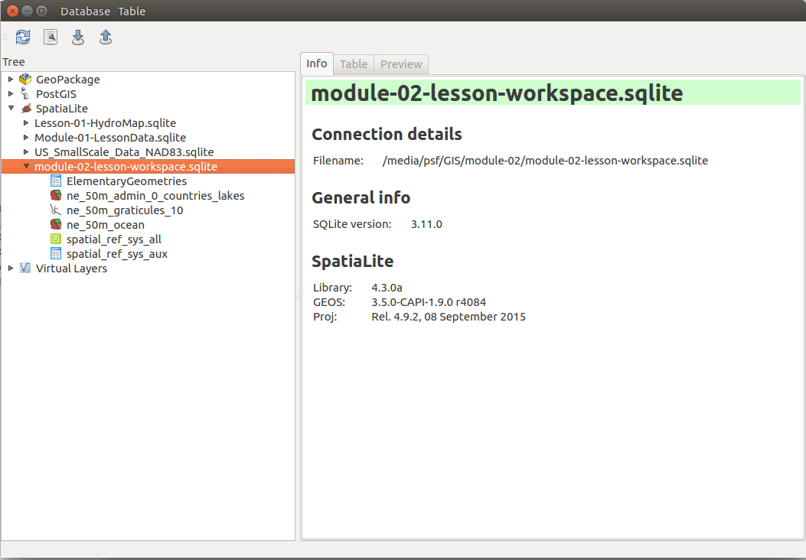
Figure 05: New database with layers from Natural Earth
Before we start executing SQL, let's find example statements we can use during the lesson. If you haven't changed table names, you should be able to copy these statements and paste them into DB Manager.
Once we have layers in our Layers Panel, let's inspect the attributes. We can see the familiar shapes of our Earthly landmasses, demarcated by nation-state borders. QGIS again automatically applies a random color to these polygons, which you can change in the Layer properties. I changed the white background to a slight gray at 85%.
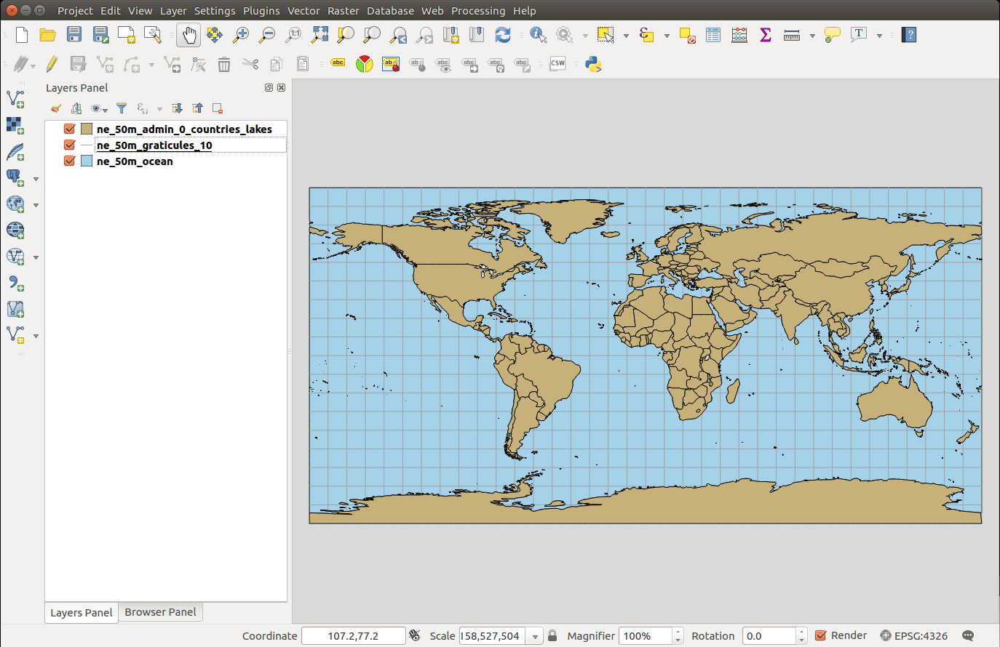
Figure 06: Unprojected (EPSG: 4326) Natural Earth layers within QGIS
Note that the graticule (lines of latitude and longitude) make nice little equally-sized squares all across the map. That's why we call this default projection for unprojected data an equirectangular projection, also known as a "Plate Carreé" projection. If you look at a globe, we know that lines of longitude converge at the poles. The equirectangular projection preserves neither correct shape nor correct area and should never be used other than to store data. We'll explore different projections in the following sections.
Equirectangular does have a surprising use in spherical photos as shown in this interactive world map, https://kuula.co/post/7fBMf:
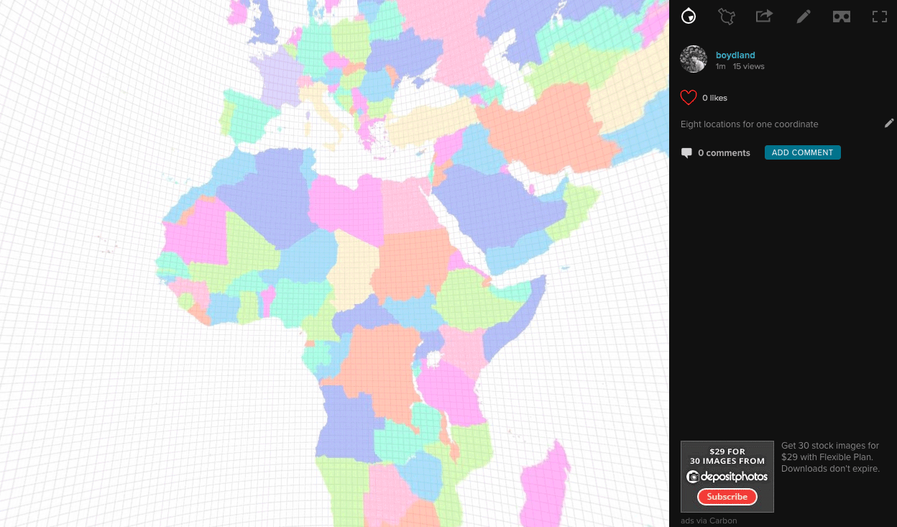
Figure 07: An equirectangular projection can make a spherical photo in the VR world
Let's move onward to more closely inspect these data.
Right-click the ne_50m_admin_0_countries_lakes layer and select Open Attribute Layer. You should now see the table of attributes:
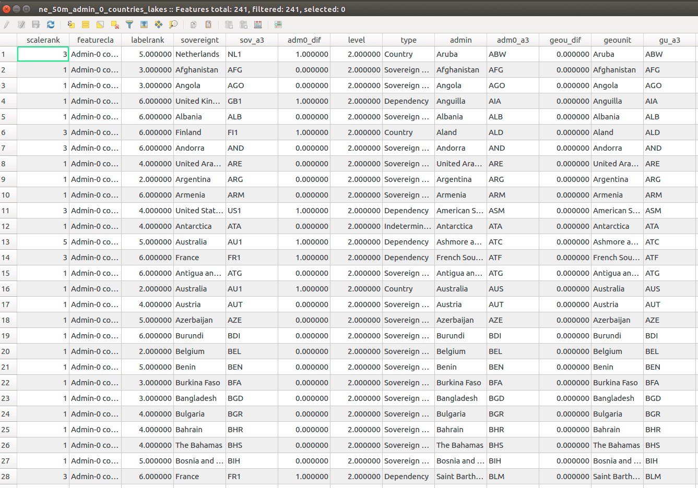
Figure 08: Inspecting attribute table
While some of these data attribute fields may not be immediately evident, we can recognize some of the potential value for us. Obviously, fields such as "sovereignty" and "admin" are the country names. We also see several fields that are codes used for individual countries: "sov_a3", "adm0_a3", "gu_a3", "su_a3", "brk_a3", "postal", "iso_a2", "iso_a3", "iso_n3", etc (some of these are internal administrative level codes specifically used by Natural Earth and not assigned by the International Standards Organization or ISO).
These are nominal (i.e., categorical) data type attributes. The attributes also include numerous numerical and ordinal data types. For instance, there are population estimates and gross national product values. Left-justified fields are text fields and right-justified fields are numeric quantities. Not all numbers are qualities, e.g., zip codes. For further explanation read Level of Measurement: Nominal, Ordinal, and Numerical Data. Understanding the data type is the first step in symbolizing your map features since certain color schemes apply to certain data types.
Sorting fields by quantity or alphabetically is easy. Clicking the field name in the attribute table will sort the table, e.g., you can sort countries by population estimate with the "pop_est" field.
Additionally, there are many other data fields of limited utility to us within this particular mapping process. However, a quick view of the Natural Earth forum can help decipher the field names. Since Shapefiles have a 10-character limit to the name of the field, they often have to be abbreviated.
If your data is in a spatial database, let's use DB Manager to explore some of the attribute data of our ne_50m_admin_0_countries layer. Open a SQL window in the DM Manager and Execute the following query:
/* Let's first view our features */
select
*
from
ne_50m_admin_0_countries_lakes
OK, let's select only those we need for our work:
/* View only useful columns */
select
id, geom, name, mapcolor7, pop_est, gdp_md_est, iso_a3
from
ne_50m_admin_0_countries_lakes
We should be familiar with the id, geom, and name fields. The mapcolor7 is an attribute to symbolize countries by seven different colors so that we can more easily see variation. The pop_est is an estimation of population count. The gdp_md_estimate is the estimate of gross domestic production (GDP), an indicator of wealth. The iso_a3 column is a three-character code used to uniquely identify countries and is a widely recognized system. We'll use this column to join attributes from the table with internet usage.
Which country is has the largest population and highest GDP? Let's sort with SQL:
/* Rank by largest population */
select
id, geom, name, mapcolor7, pop_est, gdp_md_est, iso_a3
from
ne_50m_admin_0_countries_lakes
order by
pop_est desc --specify the sort field here
and
/* Rank by highest GDP */
select
id, geom, name, mapcolor7, pop_est, gdp_md_est, iso_a3
from
ne_50m_admin_0_countries_lakes
order by
gdp_md_est desc --specify the sort field here
Enough putzing around with the attributes. With a good query executed in the DB Manager, Load as a new layer and call it "World countries" to QGIS and let's make some maps!
To symbolize a layer in QGIS, first, right-click on the World countries and choose Properties (we'll be using this procedure frequently to perform operations or analysis on data layers within QGIS).
Within the Layer Properties window that opens, select Style on the left-hand side, and then choose Categorized. Then use Column > mapcolor7 dropdown and Color ramp > Random colors.
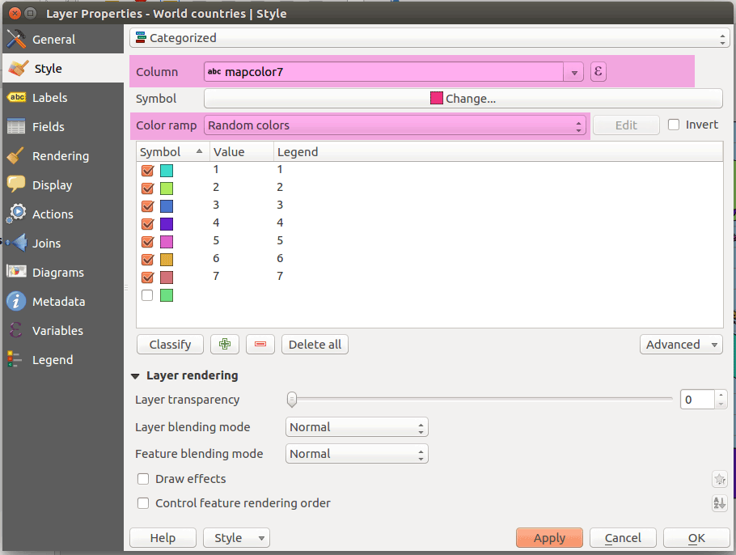
Figure 09: Categorical thematic map with a random color scheme to show difference of type.
This color scheme is called a "nominal color scheme". We're coloring our countries to emphasize difference of type. It would not be appropriate to use a "sequential color scheme" (also called a "graduated color scheme") with this attribute since it would imply difference of magnitude. A "diverging color scheme" is also not appropriate for this data, since the numbers do not indicate a quantity and we have no meaningful statistics on this data, Look at Axis maps color schemes for thematic maps.
The mapcolor7 attribute allows us to symbolize our country polygons so that no neighboring countries share the same color. What's the minimum number of colors that achieve this result? Take at look at the four color map theorem.
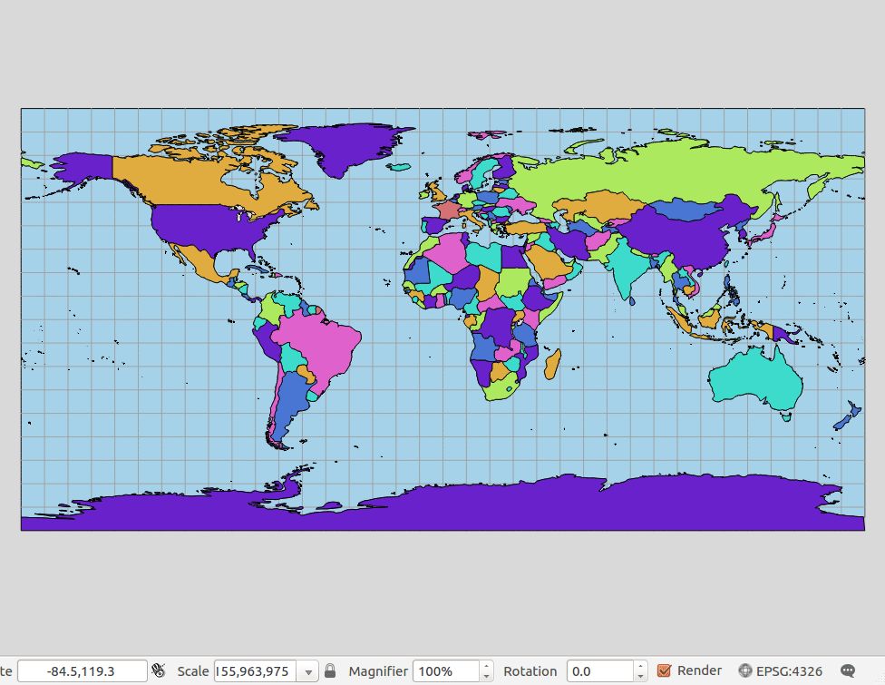
Figure 10: Nominal color scheme using the mapcolor7 attribute. YES!
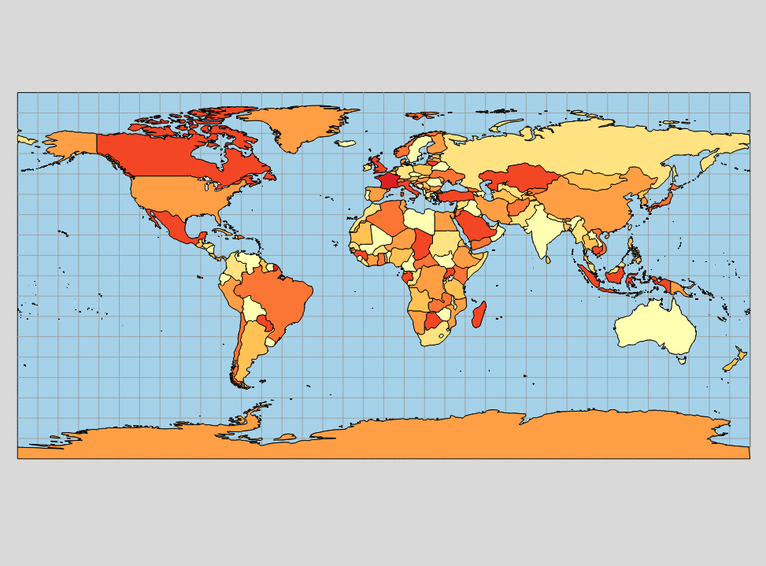
Figure 11: Sequential color scheme using the mapcolor7 attribute. NO!
Let's find an attribute where we can use a graduated color scheme: pop_est. If you don't the field, then you might need to apply an expression casting it a real number. If you used DB Manager it could have loaded our SQL query with columns in the TEXT data type (except for the INTEGER id field). When we classify our field, we will need to cast the TEXT field to a numeric data type in order to use Graduated method of classification. We do that with an Expression applied to the column in the Style tab.
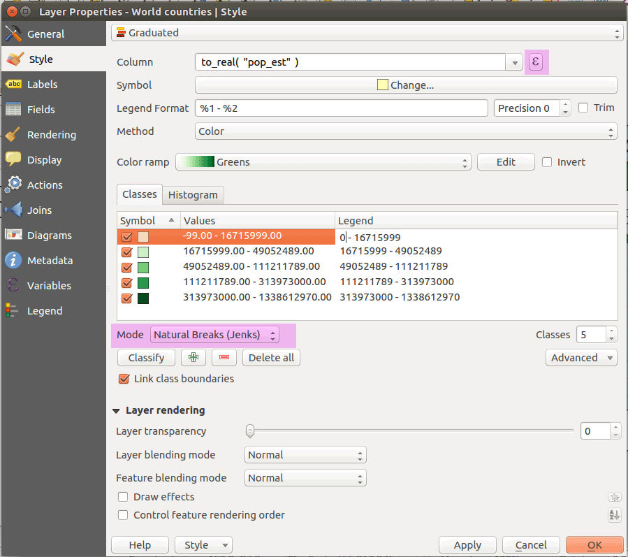
Figure 10: Sequential color scheme using the Pop_est attribute. Yes!
You won't be able to select the pop_est column without first applying an expression on your data:
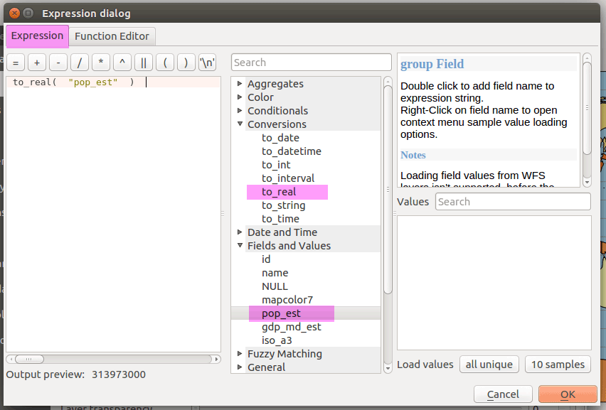
Figure 12: Apply an expression that converts a TEXT field to a NUMERIC field
Just like we did with the cast field as real in SQL for the last lesson, this is QGIS's function to change data types temporarily so that we can sort and rank our features. The method of classifying our numeric attributes is the Natural Breaks (Jenks).
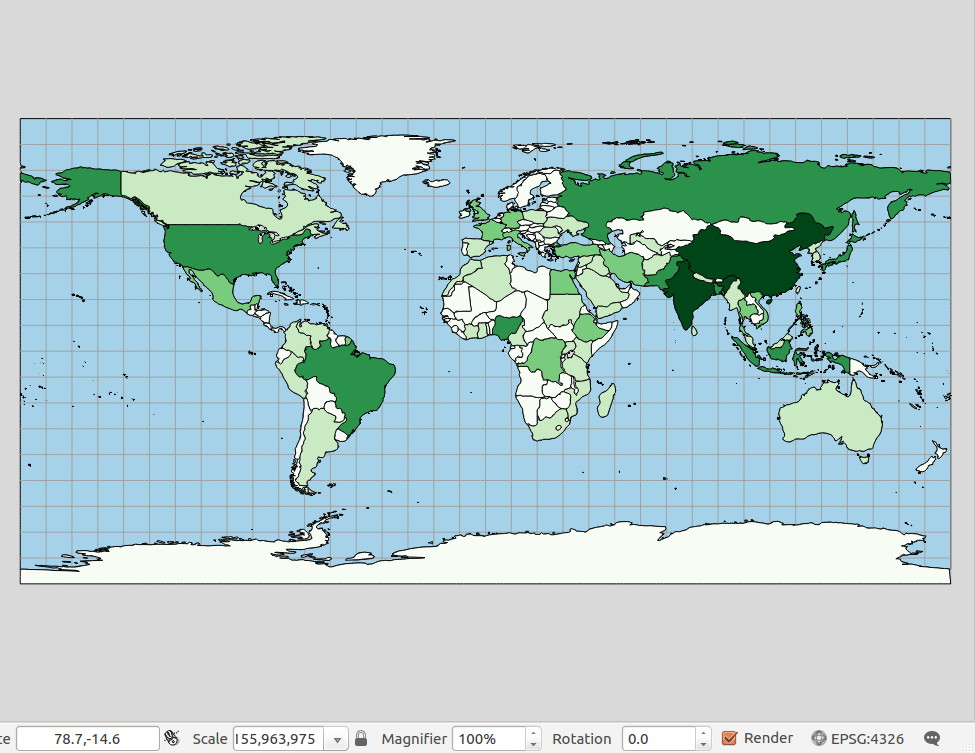
Figure 13: Map of population count using a graduated color scheme
OK, this map is terrible!! Why? It's in the default equirectangular projection. Russia looks huge! So big! Let's discover a projection that preserves the proportional area so we can compare countries.
As discussed in Module 01, making a map always involves distorting either the area or shape of the landmasses to "project" the roundish Earth on a flat surface (whether that's a printed map or your computer screen). When making a thematic map, it's important to choose a map projection that preserves the area across the map.
Within QGIS we can change the coordinate system used to draw the map by changing the QGIS menu > Project > Project Properties > CRS (as discussed in Module 01, you'll want to ensure the "on-the-fly-projection" is enabled). This will change the CRS of the display while maintaining the layers' individual CRS. If want to permanently change the CRS of layer, your would right-click the layer and Save As... to a new file. The resulting dialog window gives options for specifying a new CRS.
Find Project > Project Properties > CRS. In the lower panel of the Coordinate Reference System Selector window, we have the option to change either the Geographic Coordinate Systems or the Projected Coordinate Systems.
As we can see, QGIS offers us numerous projections out of the box (you can also define your unique projection), some of these are suitable for mapping geographies at different map scales and purposes (i.e., do we want to preserve the area or shape of our features?). See Coorindate Reference Systems for more guidance on how to choose appropriate projections for your project.
For this map, let's choose the Equal-Area Mollweide Projection. Note that it is sometimes easiest to search for a given projection within QGIS using the EPSG code (in this case EPSG: 54009).
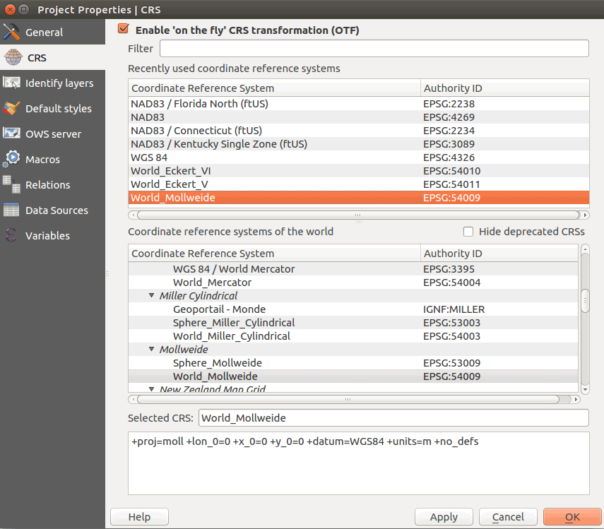
Figure 14: Selecting equal area projection
Once the map is projected into the EPSG: 54009 CRS, we can compare the result with the "unprojected" equirectangular map (above).
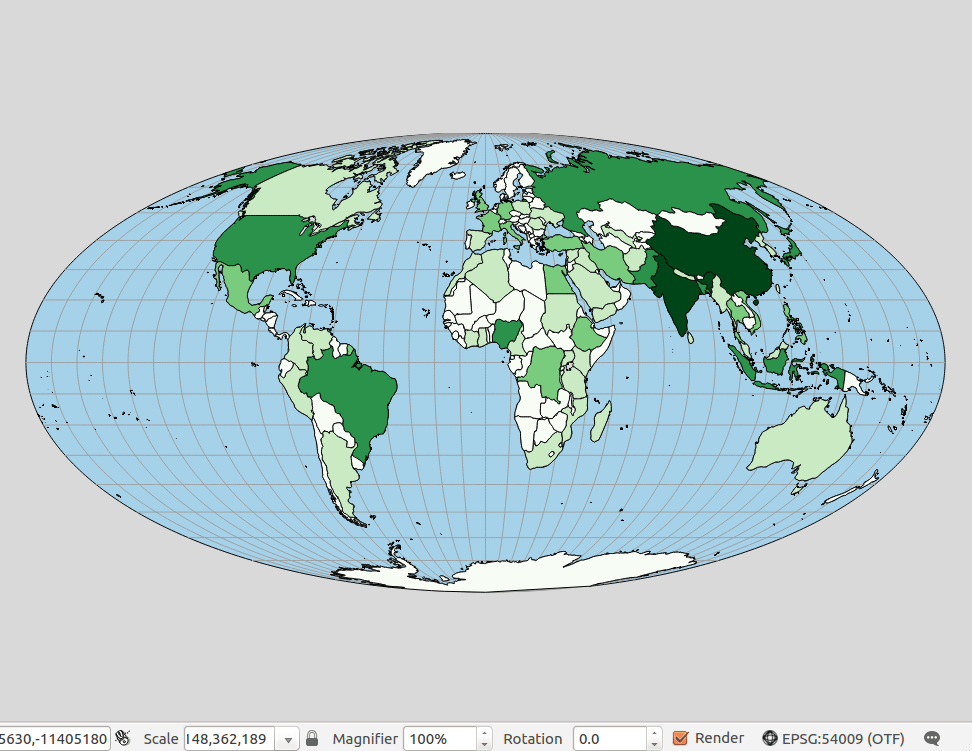
Figure 15: World map projected as equal-area cylindrical projection
We can see that now the area of the landmasses is preserved, e.g., Greenland does not appear larger than Africa. The shapes of land masses are distorted, e.g., Greenland looks kinda 'funny').
There are other equal-area projections you may find suitable for world maps. Among these are the World Eckert VI (EPSG:54010) displayed here. Note how the inclusion of a graticule, also downloadable from Natural Earth, helps one see the angles by which the map is being distorted.
Figure 16: GDP per capita map projected as equal area World Eckert VI, EPSG:54010
The World Bonne projection, EPSG:54024, is another good choice and makes the land masses appear a bit more "natural" in their shape.
A fun alternative is the World Bonne projection, EPSG:54024, though some audiences may find it difficult to concentrate on the information being displayed because of the uniqueness of the shape of the projected Earth:

Figure 17: GDP per capita map projected as equal area World Bone, EPSG:54024
If you find that a projection causes your geometry to look broken or fractured, you will need to create a new layer. Transform the layer to the new CRS using the right-click on the layer and Save As.. to new data.
Perhaps the most common type of thematic map is the choropleth, which we just made. These maps use enumeration units (a fancy term for polygons) such as states or counties to show the distribution of a particular phenomenon across the units. Choropleth maps have become the archetypal thematic map, particularly online. As the public has become accustomed to reading them (especially regarding "election maps"), mappers can assume these maps will be well understood (or, unfortunately, easily misunderstood). As a bonus, choropleths are relatively easy to make with desktop GIS programs like QGIS and web mapping libraries such as Leaflet, Mapbox and CARTO.
Choropleths are ideally used to map continuous areal (or area-based) phenomena and represent a statistical surface for enumeration units. However, as mappers, we often violate this principle. For example, it's common to use choropleth maps to symbolize population, even though the majority of people now live in dense cities. Choropleth maps also depict the data as if it changes abruptly at the borders of the enumeration unit. While this makes complete sense for something like county-level tax rates, the symbolization technique becomes problematic when applied to continuous phenomena, like the average elevation of a county.
At the most basic, a choropleth map symbology applies a sequential color scheme to symbolize the quantity of the desired variable for each enumeration unit on the map. How much of X is in Y? The goal of the choropleth, however, is to allow comparisons between different units. We should recognize that mapping raw counts present a problem; larger enumeration units can contain larger quantities of anything mappable. Raw counts or totals must be divided by another value (such as area) to create a rate, ratio, or density measure. This method is known as standardizing or normalizing the data, and it allows for the comparison of units of varying sizes.
This raw count vs. density measure is a bit of conundrum for a new mapper. Our first instinct is to map the raw count and it can make a useful map, depending on the variable. For example, it's nice to know the total population of a county. A more interesting map would be to show the density of that population (people per square mile), since that reflects a better sense of how people live in that county. Read more about Choropleth Maps.
Let's walk through the process of making a choropleth map using the data provided by Natural Earth (we intentionally saved the GDP and population estimates for this purpose). After that, we can repeat the process with data we wish to join to these country polygons to create our intended choropleth map of global Internet access.
OK, time to explore how we can make choropleth maps that normalize raw count variables, like population density.
Let's take a look at the pop_est variable for each country and divide by the polygon area of each country. This measure would give population density. When we inspect the attributes, we find no column for area, so we'll need to calculate that geometry measurement.
The first step in any measurement is deciding which coordinate system to use and then modify our Project > Project Properties > CRS to that coordinate system. We have found that the World Mollweide EPSG: 54009 is a good equal-area CRS. Verify that the lower-righthand corner in QGIS says "EPSG: 54009 (OTF)" which means that the data is being projected on-the-fly to EPSG: 54009.
Let's Save As... to a new layer (right-click the layer in the Layers Panel) using the World Mollweide CRS:
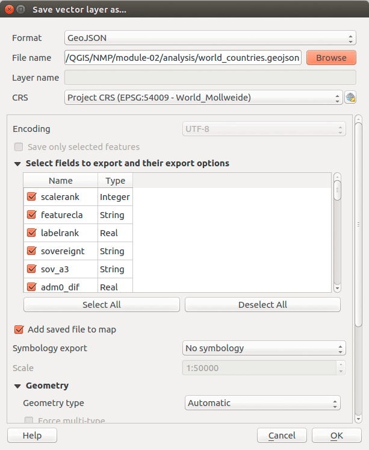
Figure 18: Save to new layer using the Project's CRS EPSG: 54009
Since we're using this layer for calculation and not for web mapping yet, we do not change the coordinate precision if you're saving as a GeoJSON. You can also save to a SpatiaLite layer (preferred on Linux). Once the layer is added to the Layers Panel, open the Field Calculator:
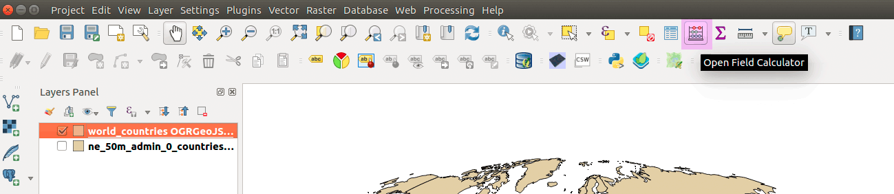
Figure 18: Open Field Calculator
Since our linear unit in EPSG:54009 is meter, the area units are square meters, a very large number! This is the default setting, though it can be changed in Project > Project Properties > General settings. In the Field Calculator we can create a column called, "Area_sq_km" and calculate square kilometers, a simple unit conversion of dividing by a million (a million square meters in a square kilometer):
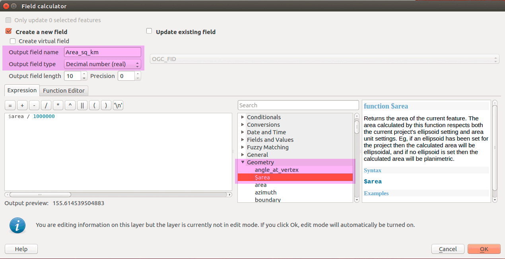
Figure 19: Calculating area in the Field Calculator using the EPSG: 54009 CRS
and using the expression:
$area / 1000000
After the calculation open the layer's attribute table and verify that you have output. When we perform table calculations, the layer enters edit mode. We can toggle editing off and save our calculations by clicking the Pencil icon:
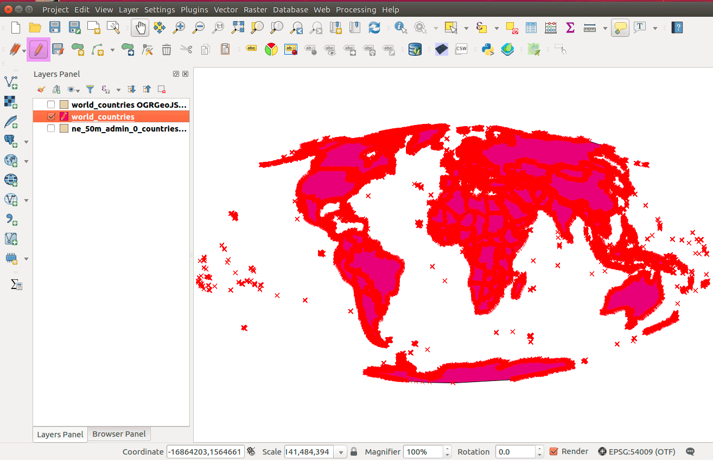
Figure 20: Saving our edits by toggle off edit mode
We can also use a vector geoprocessing tool calculate geometry measures. Find the tool in the QGIS menu Vector > Geometry Tools > Export/Add geometry columns:
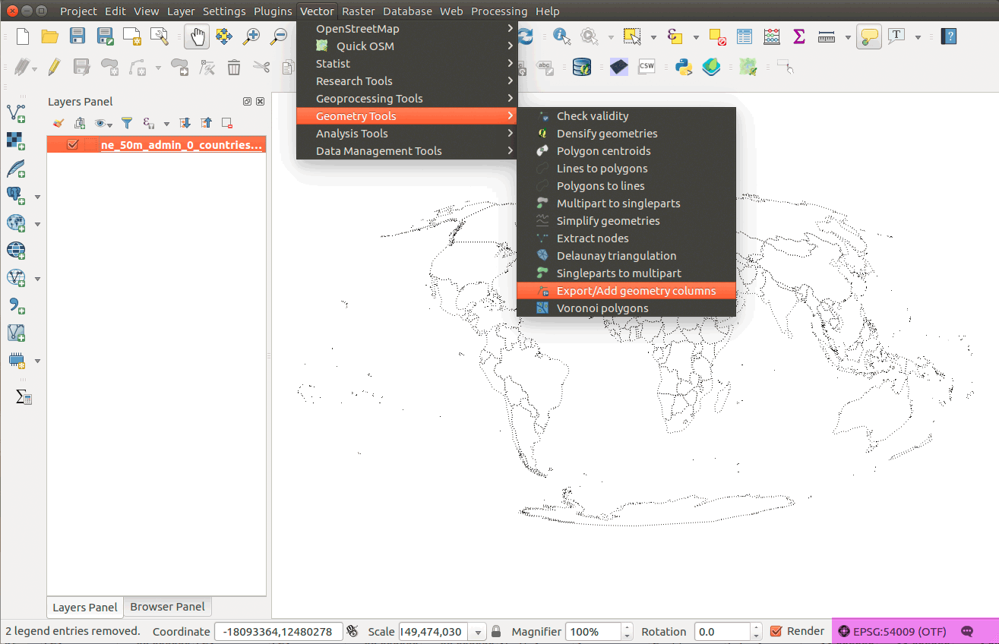
Figure 21: Adding geometry columns using the the Layer's CRS (EPSG: 54009)
This geoprocessing tool will reliable add geometry measurements and create a new layer. The parameters you need to modify is to select the Layer CRS for the geometry calculations. Note that the CRS is shown with layer name. You can save it to new SpatiaLite layer, GeoJSON, Shapefile, etc., but it is also fine to create a temporary layer. You can always Save As... to a new layer once the analysis is done. Your tool should look like:
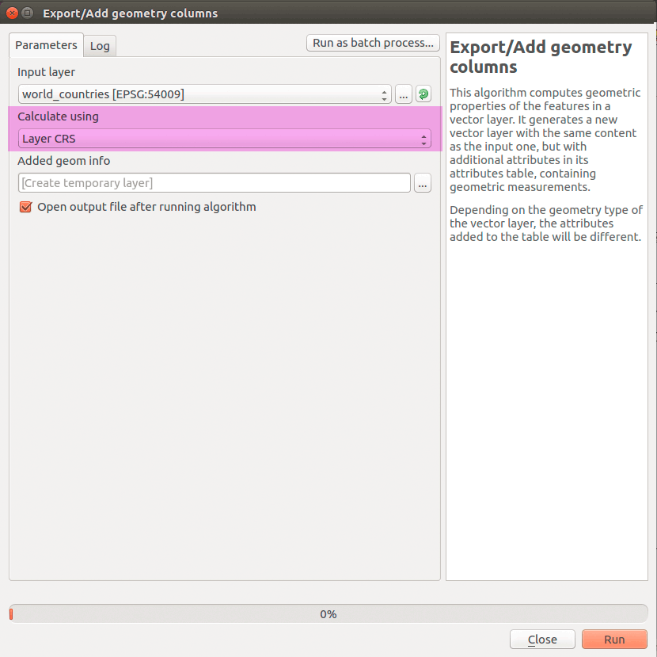
Figure 22: Adding geometry columns using the the Project's CRS (EPSG: 54009)
The output columns are in the unit of the CRS, meter. If we use this tool, we will still need to use Field Calculator to convert to square kilometers.
This method of geometry calculation is fine, but you can do this without creating new layers or data. Explore the SQL option.
Let's take a look at the pop_est variable for each country and divide by the polygon area of each country. This measure would give population density. When we inspect the attributes, we find no column for area, so we'll need to calculate that geometry measurement.
Open DB Manager and execute the query we used earlier to sort by population:
/* Rank by largest population */
select
id, geom, name, mapcolor7, pop_est, gdp_md_est, iso_a3
from
ne_50m_admin_0_countries_lakes
order by
pop_est desc --specify the sort field here
How can add a geometry measurement to our table? We can use SpatiaLite's st_area(geom) function to calculate area, where geom is the field that contains geometry. When we use this function, we need always to be aware of the coordinate system units of our layer, which, in this case, are angular units, i.e., degrees.
/* Rank by largest area in units of degrees??? */
select
id, geom, name, mapcolor7, pop_est, gdp_md_est, iso_a3,
st_area(geom) as area_unknown_units
from
ne_50m_admin_0_countries_lakes
order by
area_unknown_units
desc --specify the sort field here
Look at the output table and find the column area_unknown_units. Why are the values so small?
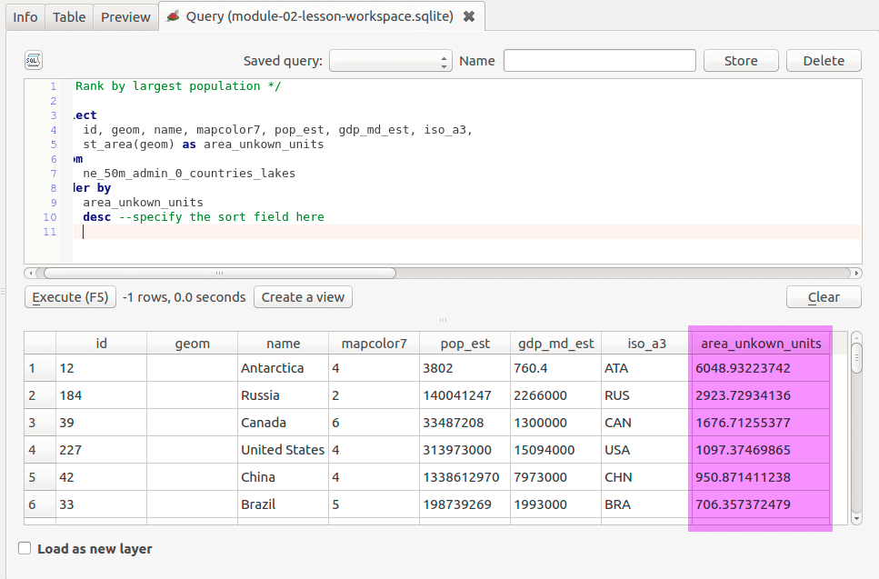
Figure 23: Area calculated in ESPG: 4326
The SpatiaLite st_area(geom) function calculates the area in 2D regardless of units. Since the units are in EPSG: 4326 are decimal degrees, which have dimensions between 360 in width and 180 in height, the output is also small. A 2D area calculation with these dimensions result in an earth area of 64,800 units. Unfortunately, this is a meaningless measurement. If we wanted to inspect our coordinate values, we can use the AsText(geom) function to display them as a text field. For example, execute this SQL in DB Manager and expend the columns to read the contents:
/* View coordinate values in geom field */
select
AsText(geom) as "Coordinates",
name
from
ne_50m_admin_0_countries_lakes
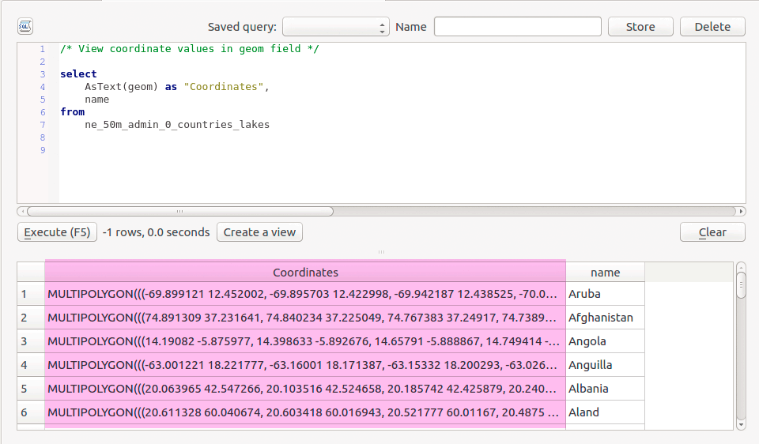
Figure 18: Use AsTest(geom) to read coordinate values in geom field
SpatiaLite's bigger buddy, PostGIS, will calculate area on a spheroid and output in square meters. We don't need to transform our CRS in that environment.
In order for SpatiaLite to calculate correct area, we'll need to project our layer to an equal-area CRS before calculating area measurements. We can use the st_transform() function to project our layer. We only need to know the field name that contains the geometry, i.e., the geom field, and the SRID of the target coordinate system. Let's practice some SQL queries to show how the st_transform() works.
/* Transform geometry field to EPSG: 3975 */
select
st_transform(geom, 3975) as equal_area_geom,
AsText(geom) as "Coordinates",
name
from
ne_50m_admin_0_countries_lakes
Let's take a look at the output, which gives us two geometry fields, one as a BLOB and the other as TEXT. The equal_area_geom has units of meters since we projected the geometry to an equal-area projection called EPSG: 3975.
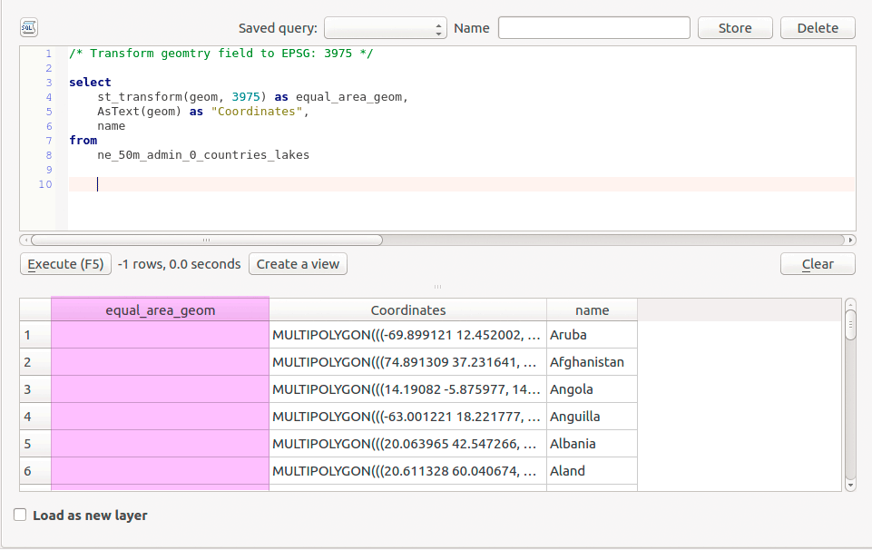
Figure 24: Two geometry fields in different coordinate systems
We can reveal the contents of the equal_area_geom field by nesting functions in SQL:
/* Transform geometry field to EPSG: 3975 and display contents as text */
select
AsText(st_transform(geom, 3975)) as "Coordinates in EPSG: 3975",
AsText(geom) as "Coordinates in EPSG: 4326",
name
from
ne_50m_admin_0_countries_lakes
Look at the resulting columns:
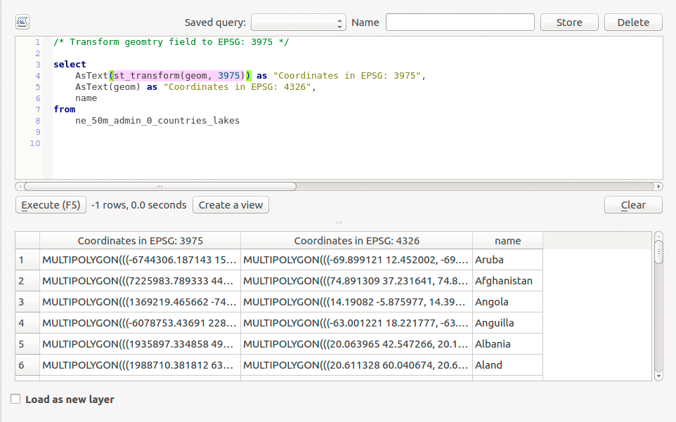
Figure 25: Nesting functions to show two different coordinate systems
If we observe the nesting function capability, it should be easy to see that we could transform and calculate area in the same step. Let's put it all together with the following SQL. Note that the linear unit of measure in EPSG: 3975 is meter. To convert square meters to square kilometers, we need to divide by 1,000,000 (without the thousand separators):
/* Rank by largest area in units of square kilometers */
select
id, geom, name, mapcolor7, pop_est, gdp_md_est, iso_a3,
st_area(st_transform(geom, 3975))/1000000 as "Area in square kilometers"
/* note that the linear unit of measure in EPSG: 3975 is meter. To convert sq m to sq km, we need to divide by 1,000,000 */
from
ne_50m_admin_0_countries_lakes
order by
"Area in square kilometers"
desc
Your successful query should look like:
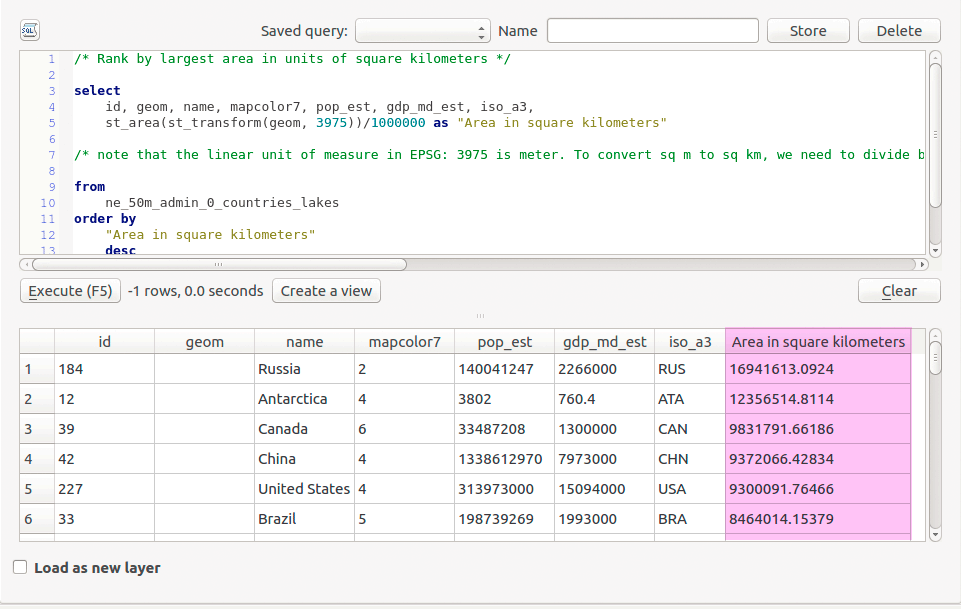
Figure 26: Transform and calculate area in a different coordinate system.
If you Google the areas of countries in square kilometers, you'll discover that these values are close but not exact. Why is that? Two main reasons. First, the shapes of the earth's landmasses is encoded at 1:50,000,000-scale resolution. The shape is imprecise so the measured area will also be imprecise. A second reason is that no one projected coordinate system can measure the globe accurately.
In the previous section, we used the Equal-Area Mollweide Projection, EPSG: 54009. Unfortunately, this SRID isn't included in the default set of SpatiaLite projections. We can easily add new projections to our spatial database by using the Insert statement found at http://www.epsg.org/54009. If you copy the SQL definition text for PostGIS in the Export section, you can paste it into SpatiaLite and execute:

Figure 27: Copy SQL definition(PostGIS) at epsg.io/54009 and paste it into SpatiaLite
The copied SQL gives us:
INSERT into spatial_ref_sys
(srid, auth_name, auth_srid, proj4text, srtext)
values
( 54009, 'ESRI', 54009, '+proj=moll +lon_0=0 +x_0=0 +y_0=0 +datum=WGS84 +units=m +no_defs ', 'PROJCS["World_Mollweide",GEOGCS["GCS_WGS_1984",DATUM["WGS_1984",SPHEROID["WGS_1984",6378137,298.257223563]],PRIMEM["Greenwich",0],UNIT["Degree",0.017453292519943295]],PROJECTION["Mollweide"],PARAMETER["False_Easting",0],PARAMETER["False_Northing",0],PARAMETER["Central_Meridian",0],UNIT["Meter",1],AUTHORITY["EPSG","54009"]]');
Which will look like this in DB Manager:

Figure 28: Executing this SQL query will insert a new record in our spatial reference table, though nothing will be returned in the SQL window
Note that you can only insert this record once, since we can't have duplicate SRIDs. If you changed the SRID to the large value to make it unique, you could create your own projections.
OK, let's put it together to find areas of countries in square kilometers in the Mollweide equal-area projection. Here's the SQL:
/* Rank by largest area in units of square kilometers in Mollweide projection */
select
id, geom, name, mapcolor7, pop_est, gdp_md_est, iso_a3,
st_area(st_transform(geom, 54009))/1000000 as "Area_in_sq_km"
/* note that the linear unit of measure in EPSG: 54009 is meter. To convert sq m to sq km, we need to divide by 1,000,000 */
from
ne_50m_admin_0_countries_lakes
order by
"Area_in_sq_km" desc
Note that I added underscores to field names. If you have a successful query, let's Load as a new layer and start normalizing our raw count population field:
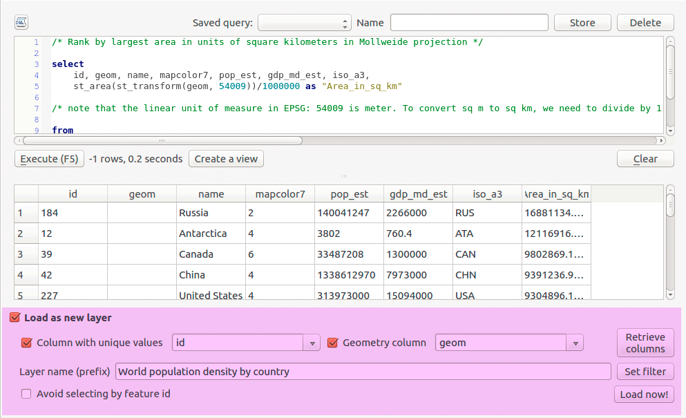
Figure 29: Load layer with area measurement
We now have a spatial layer with population as a raw count and a field with a measurement of area by country. Let's use our Layer Properties > Style tab to create a custom expression for Graduated symbology:
Use the Expression dialog like we did earlier to convert our TEXT fields to NUMERIC field types. You only need to do this if QGIS doesn't recognize the values as numeric. Then, use the division symbol / to divide population count by area:
to_real( "pop_est" ) / to_real( "Area_in_sq_km" )
This is calculated "on the fly" just like our coordinate system. Your Styles panel should look like:
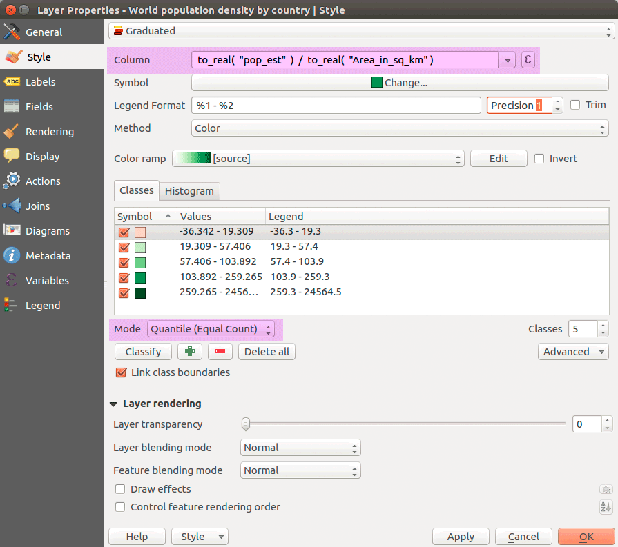
Figure 30: Style panel for creating population density measure
We used the "Quantile (Equal Count)" (nice video explanation from Benjamin Meader) classification mode. Because the population density is highly skewed, using Natural Breaks would have most countries in the lowest classes. The Equal Count puts an equal number of countries in each class. Setting classification mode is an exploratory process. However, once you get a distribution that looks detailed, we can clean up the legend and make a finished map.
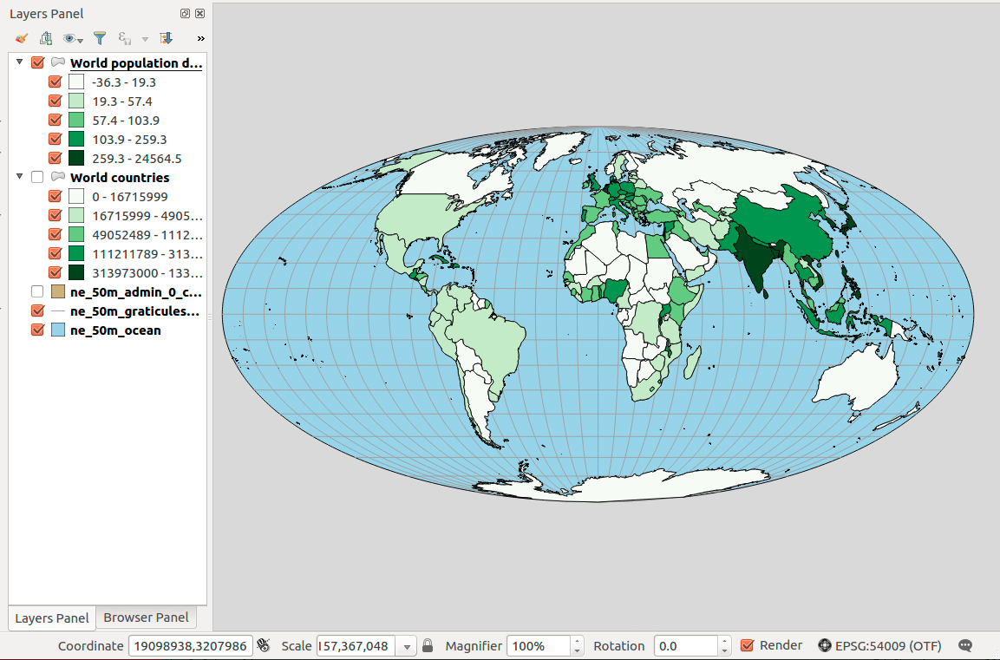
Figure 31: People per square kilometer by country
The inclusion of a legend is important for the reader to interpret the symbology of a choropleth map. Within QGIS, we can add a legend using the Print Composer, as we did in Module 01.
Before we do that, however, let's take a moment to think about these values that we've calculated using Expression dialog window. We can see that initially simply divided our to_real( "pop_est" ) / to_real( "Area_in_sq_km" ) values to get a range of values of people per square kilometer. Why is there a negative population? Three records have "-99" values, which means can't be determined. Right-click your and Open attribute table and then double-click the field pop_est to sort. You should see:
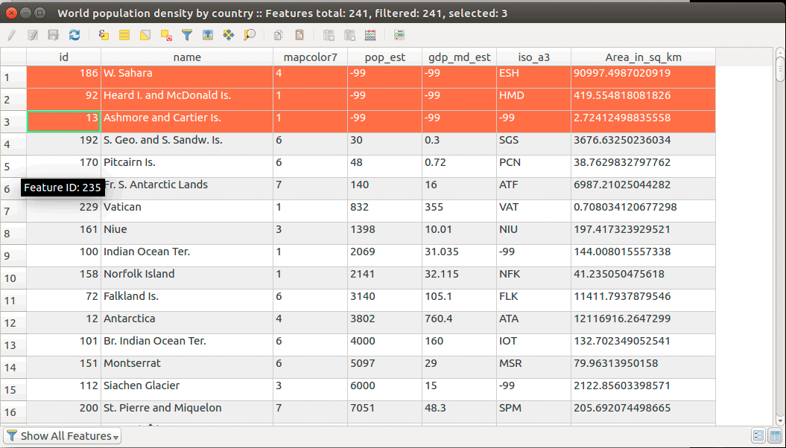
Figure 32: Table for layer people per square kilometer by country
To fix this, we need only to manually adjust the actual values of the class breaks to be more rounded numbers. It may not seem very scientific to take the values that QGIS painfully produced through precise algorithms and just round them to other numbers as we see fit. Trust us, this is a perfectly acceptable cartographic practice. We've already seen how changing the mode of classification dramatically remakes the map. There are few hard and fast rules when it comes to these questions. Use your power as a cartographer thoughtfully, since you can significantly influence the interpretation of this map.
To alter your class breaks, just double-click the Values in your Style tab classification values. You'll need to also edit the corresponding Legend values:
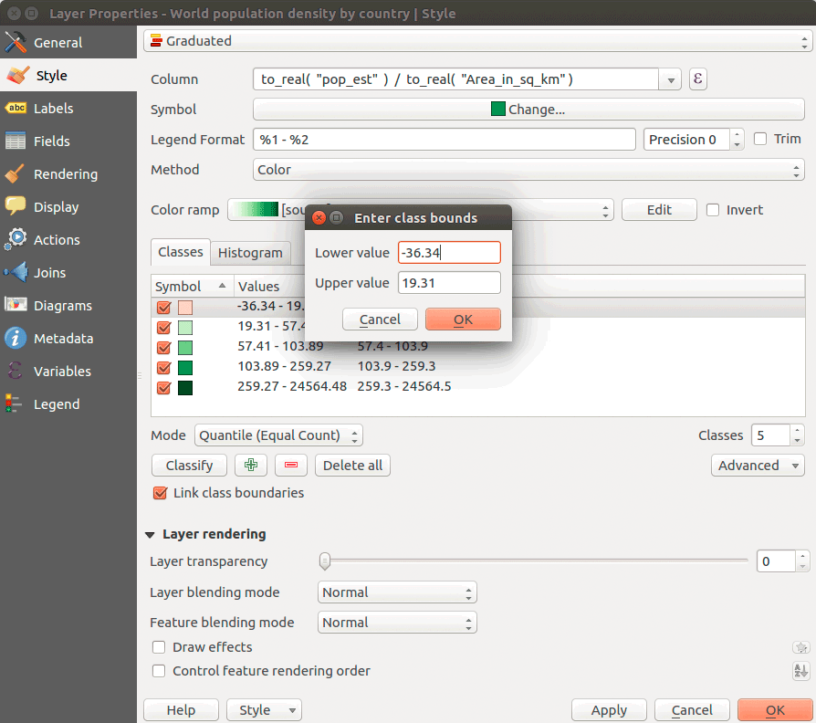
Figure 33: Editing classification breaks
Let's take moment to discuss field "precision" in the context of the Style tab and legend. A numeric field's "precision" is the number of decimal places here. If you applied a negative precision, you are rounding to the number.

Figure 34: When you finish your style and legend, save the style as a QGIS Layer Style file or in a database
When you have a map you like, create a new Print Composer, say 12" wide by 18" tall page size, and add this map and legend. Here might be what you create:
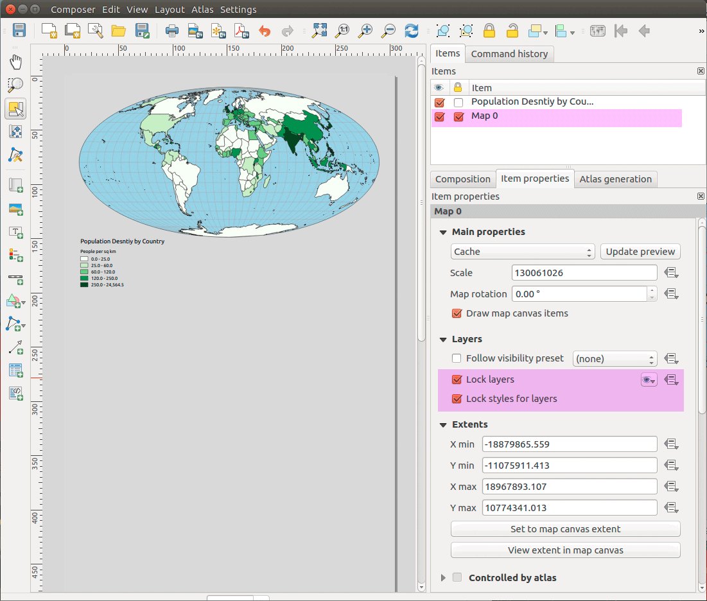
Figure 35: Creating a finished map in Print Composer
In the Map 0 > Item Properties tab, check on Lock layers and Lock styles for layers. This creates a snapshot of our Map Canvas. Now we can alter layers in our Layers Panel to create additional maps to place in Print Composer.
We just walked through a foundational process for creating a choropleth map using QGIS. Before moving on to this week's lab challenge, let's bring in some tabular internet access data and join them to these country geometries.
We've acquired data about world internet access and we've need to make a choropleth map allowing a user to compare these rates. We can either keep the existing QGIS project file open to use in this next section, or we can save the current project and then save a new project (world internet access by country). Since we went through all the trouble of cleaning up the attribute table, we may as well just reuse this project instead of downloading new data.
First, let's take note of our data. We've been given a CSV plain text file (comma separated values) internet_users.csv, which is an edited version of the API_IT.NET.USER.P2_DS2_en_csv_v2.csv file. If we open this file within a code editor, we can quickly see this is a little dizzying.
NOTE: We recommend using the OpenOffice Calc application for editing CSV files. We can edit with a code editor, but it would take some clever find/replace and select techniques.
Upon inspecting the data encoded within the internet_users.csv file, the important things we want to take note of are:
Also notice the .csvt file (e.g., named internet_users.csvt ) that defines the field data type for each field. This .csvt file must be a text file with only one line and defines the types for each column. They should be quoted and comma separated, e.g. "Integer","Real","String" for INTEGER, NUMERIC, and TEXT data type, respectively. The sequence should match the .csv field list.
Our goal to join this CSV data to our country layer geometries using the shared Country Code values. In GIS this is called performing a table or attribute join.
First, let's load the internet_users.csv via the QGIS menu Layer > Add Layer > Add Delimited Text Layer...:
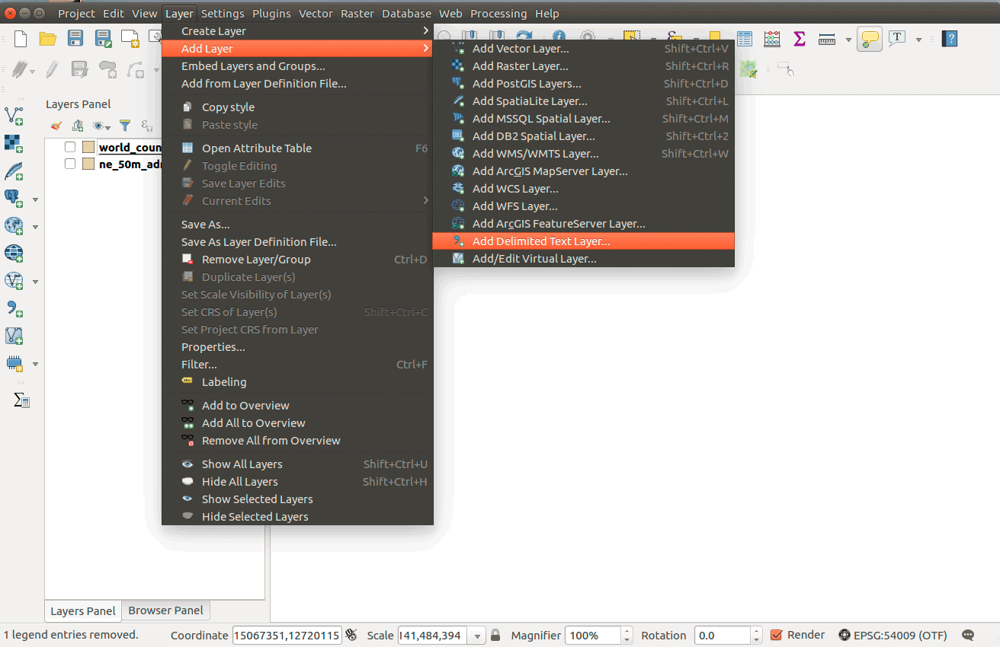
Figure 36: Add Delimited Text Layer
with the following option selected No Geometry:
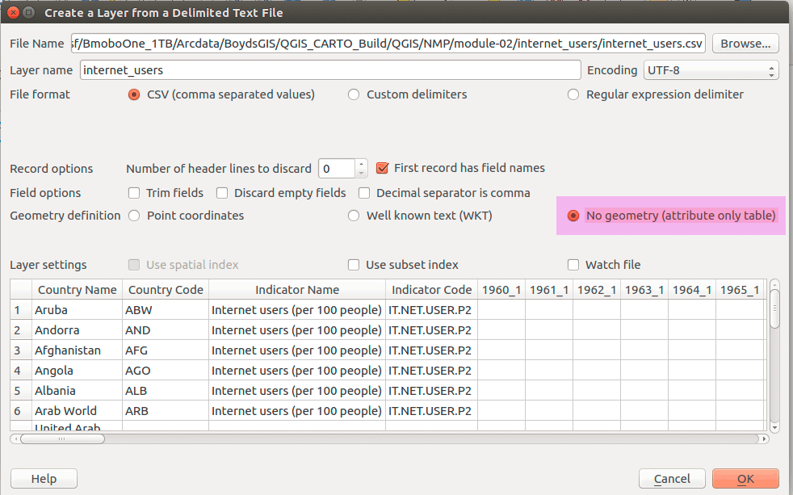
Figure 37: Delimited text layer import options
Our world country spatial layer and internet CSV table share a common field; the both have a country code in the same three-digit format, which are "Country_code" and "iso_a3". Access the properties of world country spatial layer and select the Joins panel. Select the join table and attributes to create the join:
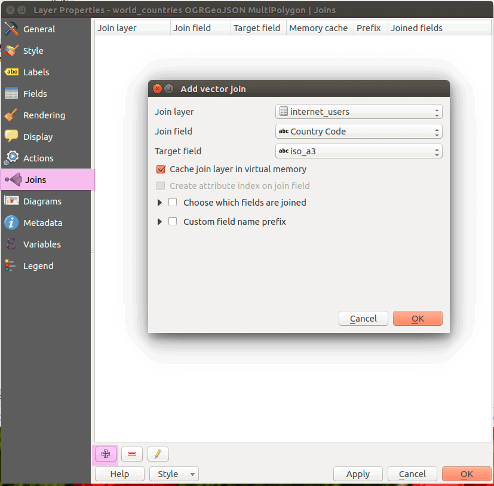
Figure 38: Attribute join in the layer properties dialog
Verify that you have a join in the attribute table. If all looks good, you can now map internet usage by country.
Joins are not permanent by default and are mainly used for symbolizing features. If you try to edit a joined table, e.g., creating a new field for area calculations, you will likely break the join. The easiest way to make the join permanent is to save the join layers to a new layer. Right-click the layer and Save As... to a new GeoJSON. If you wanted to only save subset of features (as required in the lab) you can run a Filter... before you save the layer.
Let's first import the text file into our spatial database using the Import dialog in DB Manager:
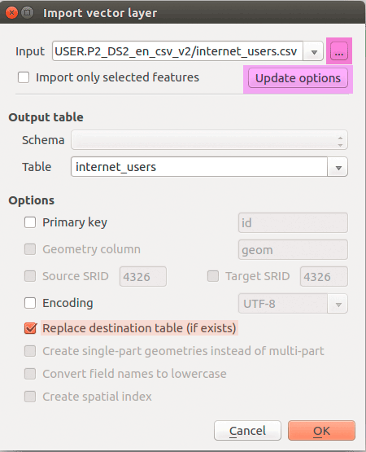
Figure 39: Find the CSV file using the Directory browser button in the Import dialog
Our country spatial layer and internet use CSV table share a common field; the both have a country code in the same three-digit format. We'll join these two tables using this common field or key. We have two main types of joins in SQLite-flavored SQL that we'll use:
The column names and tables we'll use are:
An example in SQL would help. This is called a Natural or inner join:
/* Join tables where records share the same attribute */
select * from
ne_50m_admin_0_countries_lakes,
internet_users
where
internet_users."Country Code" = ne_50m_admin_0_countries_lakes."iso_a3"
Where records in both tables share the same value in these columns, their attributes are joined. 213 joins were produced in the output table. Let's do an outer join:
/* Join tables where all records are output from the left-hand table
and only the matching records from the right-hand table */
select
*
from
ne_50m_admin_0_countries_lakes --this is the left-hand table
left outer join
internet_users --this is the right-hand table
on
internet_users."Country code" = ne_50m_admin_0_countries_lakes."iso_a3"
All records from the spatial layer, the first table listed is the left-hand table, are included in the join. Matching records in the right-hand table are included. We have 241 records output. That means 28 country codes don't match. Political geography is a volatile field of practice!
Let's create a layer for mapping Internet access for the year 2014 with the following SQL query:
/* Internet usage for 2014 by country per 100 people ranked highest to lowest */
select
internet_users."2014",
ne_50m_admin_0_countries_lakes."iso_a3",
ne_50m_admin_0_countries_lakes."geom",
ne_50m_admin_0_countries_lakes."id",
ne_50m_admin_0_countries_lakes."name",
ne_50m_admin_0_countries_lakes."pop_est",
ne_50m_admin_0_countries_lakes."gdp_md_est"
from
ne_50m_admin_0_countries_lakes --this is the left-hand table
left outer join
internet_users --this is the right-hand table
on
internet_users."Country code" = ne_50m_admin_0_countries_lakes."iso_a3"
order by
internet_users."2014" DESC
And you should have this output:
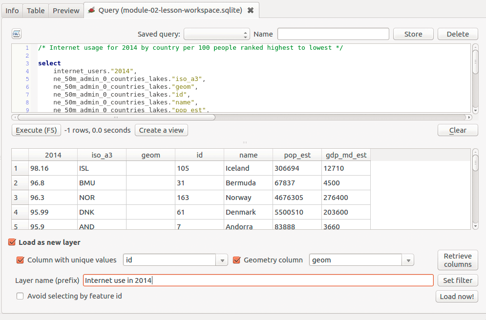
Figure 32: Joined table showing internet use in 2014 by country
After you have a verified a successful join, add the layer to our Map Canvas and start styling it! Here's a styled layer:
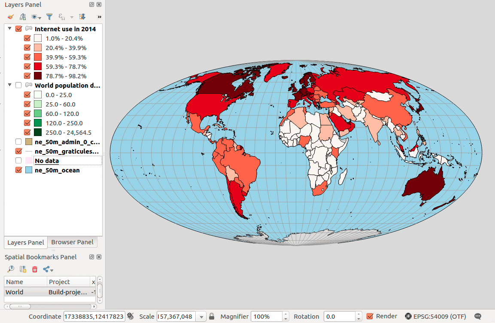
Figure 40: Internet use by country in 2014
Notice the % symbols in the Legend Format settings in the layer's Style tab. To the right it adds a percent sign. To the left, it denotes which how to display the class breaks in the legend with %1 being the lower class break value and %2 the upper class break value.
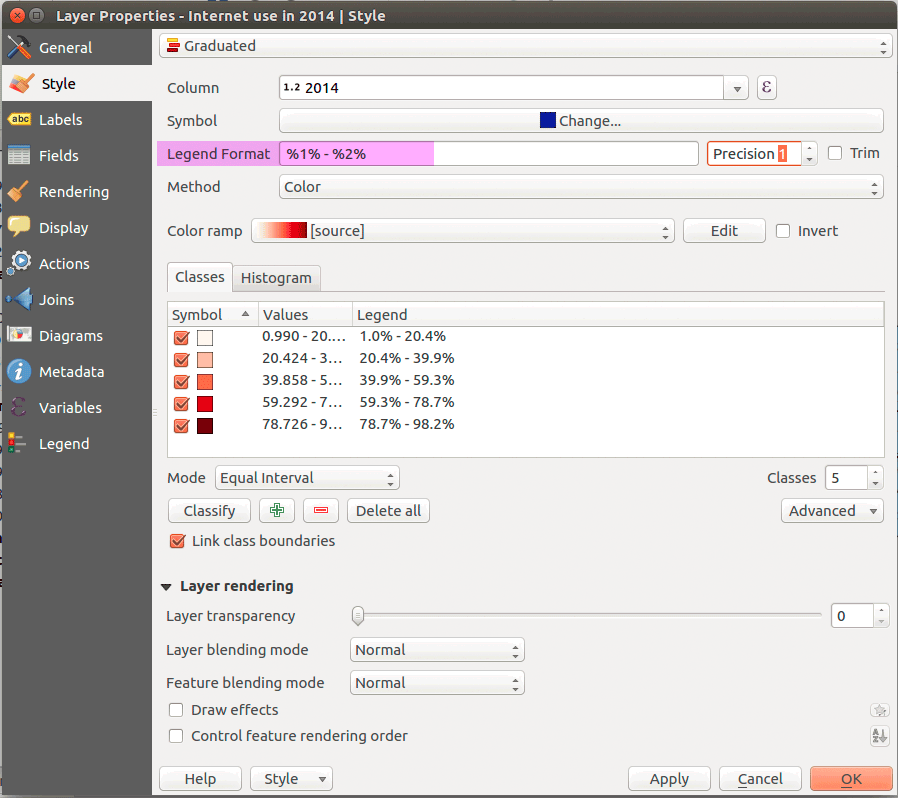
Figure 41: Styling the internet use by country in 2014 layer
OK, let's finish our map by adding the new map in Print Composer.
To finish our exercise, we need to add this new map and legend to our Print Composer layout. Since we have locked the styles for the previous Map Canvas map showing population density, let's add this new map and repeat the process:
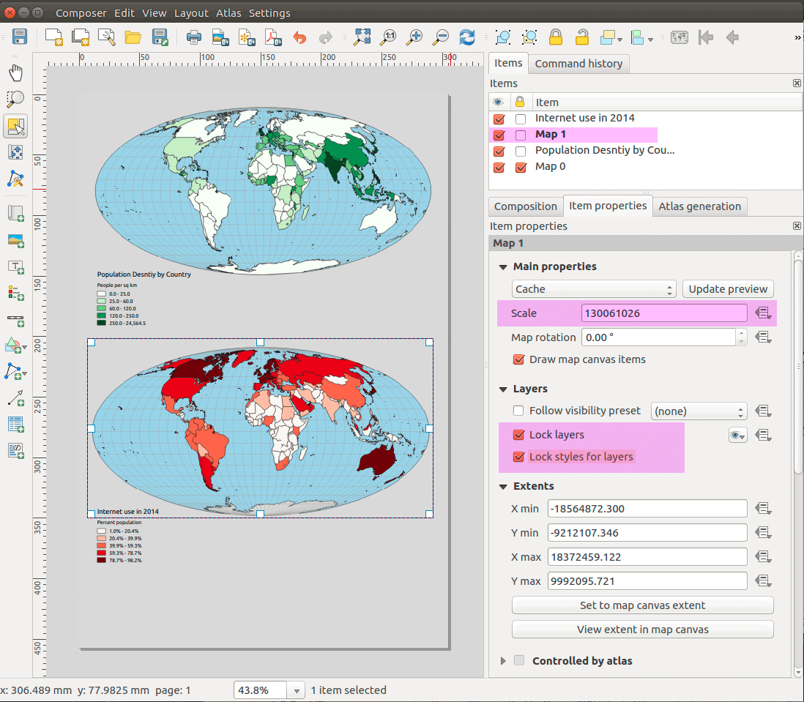
Figure 42: Adding a second map to our layout
This second map is called "Map 1" has a unique set of Item properties. If we want our maps to look the same, we'll need to ensure their scale match. In the lab, you'll add multiple maps to a page and will adjust the scale and rotation to make additional maps look good on the page.
Now let's finish up our map with title and metadata to complete our lesson. Since we're displaying a world map, scale bars and north arrows aren't necessary. In fact, a scale bar would be misleading since the earth is certainly not that much shorter between the poles than at the Equator.
An example of a finished map:
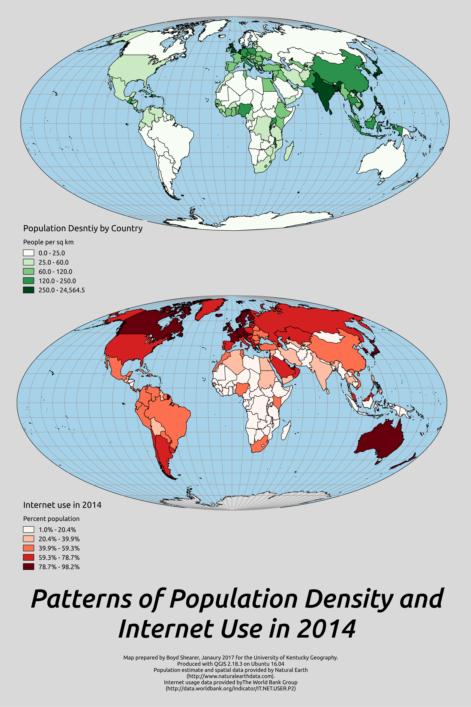
Figure 43: Patterns of Population Density and Internet Use in 2014
So we have a nice map to share, but what if we wanted to share a spatial data for online mapping? This is part of Lab 02. We know we want to export to a GeoJSON, but the data types of our columns need to be explicitly defined as NUMERIC or TEXT, which are the only two types in GeoJSON. Any value enclosed in quotes is considered a TEXT type. As we have seen, we can easily cast and convert data types "on the fly" in QGIS and SpatiaLite. Let's outline a method that makes data types permanent and includes calculations and density measures
We have been asked to create a map of county population density map for Kentucky. We have two layers; a county polygon layer and a table of county population values. We will need to calculate both an area for the county and the population density measure. Can we do this in one step?
In PostGIS it's fairly easy to create a new table from a query. Look at the following example using the CREATE TABLE ... AS statement:
create table
kentucky_counties
as
select
county_poly_layer.id,
county_poly_layer.geom,
"PopulationTable".fips,
"PopulationTable".county_name,
"PopulationTable".population_column,
"PopulationTable".population_column / ((st_area(st_transform(county_poly_layer.geom,3089)))/2.788e+7) as pop_per_sq_mile
-- calculate pop density per square mile
-- we can use scientific notation for large numbers in expressions
from
county_poly_layer, "PopulationTable"
where
county_poly_layer.geoid = "PopulationTable".fips
and
"PopulationTable".state='KY'
That's it! In one step you perform a join, calculate population density, and created a new layer.
Notice that table and field names that have capital letters need to enclosed in double quotes "". Now, look at the nested functions to calculate population density. Look at the innermost function and work out. We are doing steps in the following order:
Now you just need to load the table into QGIS's Map Canvas and export as a GeoJSON with the minimum attributes and coordinate precision.
In SpatiaLite we can't use the CREATE TABLE statement on layers with geometry fields (we'll add geometry columns in the next lesson). In this addendum we'll use the process of loading layers into new databases to make queries permanent, which we can then edit. Since SpatiaLite databases are very portable, this is a common procedure.
First, let's do the table table join to add attributes to a table with geometry:
select
county_poly_layer.id,
county_poly_layer.geom,
population_table.fips,
population_table.county_name,
population_table.population_column
from
county_poly_layer, population_table
where
county_poly_layer.geoid = population_table.fips
and
population_table.state='KY'
Load as new layer into QGIS. You map should look like this:
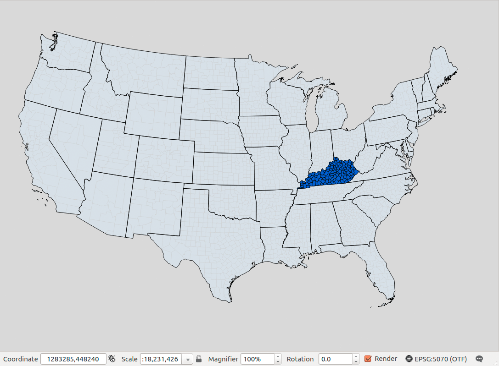
Figure 37: Kentucky county polygon layer
with an attribute table:
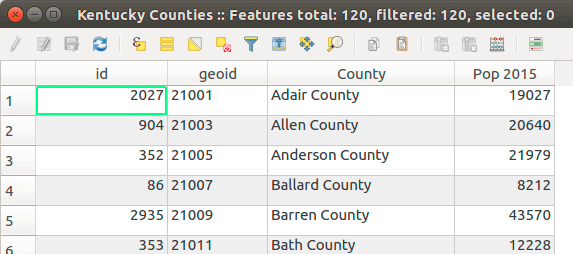
Figure 44: Kentucky county polygon layer attribute table
You might think you could use this table to calculate county areas and then a population density measure. Unfortunately, the table join prevents use from calculating or adding new fields. The execution would work without a notice or error, but the join gets mismatched and we're left with an invalid table. It's one of those GIS 'gotchas' and should always inspect and test your output before you claim that it's awesome.
We have an easy fix; import this virtual layer back into a new database using the DB Manager Import layer like we've done so many times before. This will make our join a permanent table that we can then edit freely. After import, inspect your table's General Info for the following:
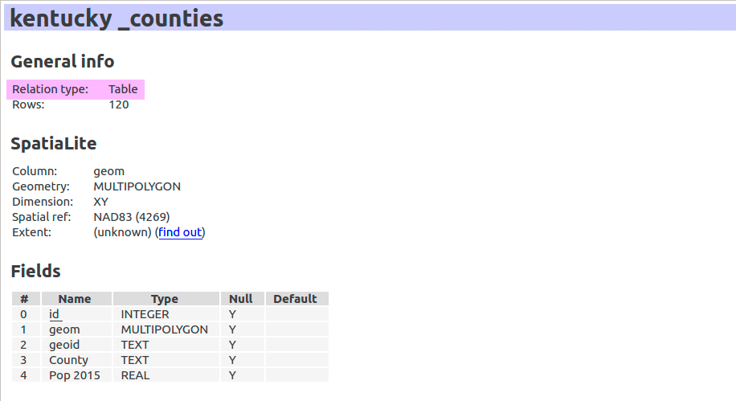
Figure 39: new Kentucky county polygon layer table with permanently joined data
As we have seen in SQL, we can create new calculated fields easily with SQL queries. Unfortunately, we can't easily control the data type with this method. It is problematic for exporting layers to other applications. Let's use the DB Manger's Edit Table dialogue to add a new field:
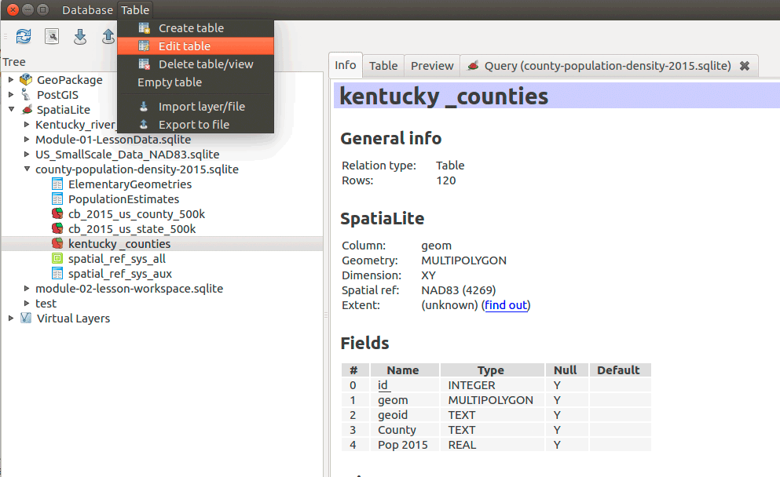
Figure 45: Edit table to add a new field
Then, Add Column and add properties for the field. It needs to be a REAL data type and since we're exporting to GeoJSON we can have verbose field names. Try to add the unit of measure and topic, if possible.
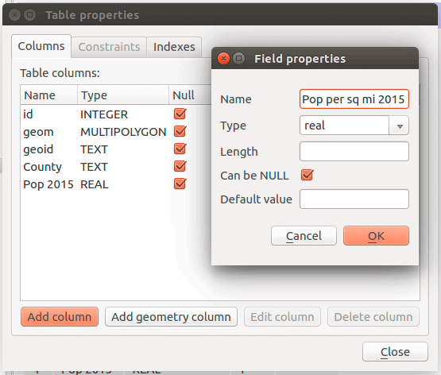
Figure 46: Add new column or field
Once completed, we go back to the SQL window and execute the command Update to calculate a table's field. Try following statement:
update
kentucky_counties
set
"Pop per sq mi 2015" = 9/10
It outputs zero? SpatiaLite (and PostGIS) databases look at the data types of math inputs and outputs the lowest type, e.g., integer/integer will get an integer output, with truncation!
Now let's try:
update
kentucky_counties
set
"Pop per sq mi 2015" = 9/10.0
Now that's better! OK, let's apply what we have learned so far and make population density measure on this table. Consider the following SQL:
update
kentucky_counties
set
"Pop per sq mi 2015" =
round("Pop 2015"/(round((st_area(st_transform(geom,3089)))/2.788e+7)),2)
/* area derived from EPSG: 3089 (feet), scaled to sq mi, and the whole thing rounded to two digits */
Look at the nested functions. Look at the innermost function and work out. We are doing steps in the following order:
Now you just need to load the table into QGIS's Map Canvas and export as a GeoJSON with the minimum attributes and coordinate precision.
Note: If your table doesn't seem to update, then close and reopen DB Manager.